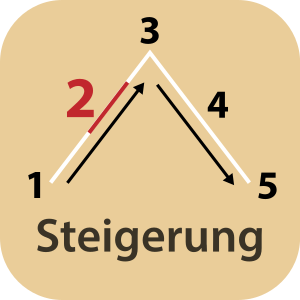

Steigerung
: Zweiter Akt in der
Fünfaktstruktur
. Die Haupthandlung kommt ins rollen und zentrale Themen und Konflikte werden eingeführt. Der
Held
der Geschichte erlebt erste Unwägbarkeiten und muss seine ersten Aufgaben bewältigen.
